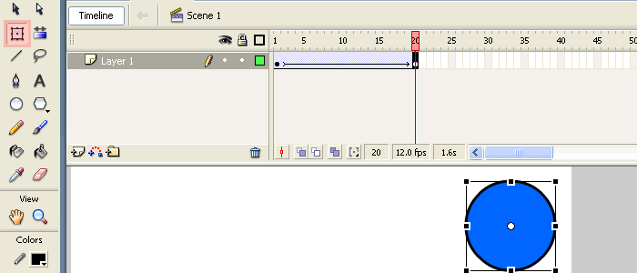

Introduction to UI Animation
Presented by Thanh Tran
Definition
Animation* is the process of making the illusion of motion and change by means of the rapid display of a sequence of static images that minimally differ from each other. The illusion—as in motion pictures in general—is thought to rely on the phi phenomenon.
(from Wikipedia)
Example

Frame-based Animations
Frame
A frame is one of the many still images which compose the complete moving picture / animation

Frame Rate
Frame rate, also known as frame frequency, is the frequency (rate) at which an imaging device displays consecutive images called frames. [...] Frame rate is expressed in frames per second (FPS). — Wikipedia
Frame rate example in motion pictures
Video 1 24FPS | Video 1 60FPS | Video 2 24FPS | Video 2 60FPSTween-based Animations
Tween-based Animations
Borrow from Flash's term: tween - inbetweening animation

Computer-generated animation by changing styles and display properties gradually over a period of time
There are at least 2 keyframes marks the start and end states of the animation
Demo
Authoring simple tween animation with Google Web Designer
CSS Animations
Example:
p {
animation-delay: 0s;
animation-direction: alternate;
animation-duration: 3s;
animation-iteration-count: 3;
animation-name: slidein;
animation-timing-function: ease;
}
@keyframes slidein {
from {
margin-left: 100%;
width: 300%;
}
to {
margin-left: 0%;
width: 100%;
}
}CSS Transitions
Example:
.target {
transition-delay: 0s;
transition-duration: 3s;
transition-property: all;
transition-timing-function: ease;
}Animatable properties
Most common: all, left, right, top, bottom, width, height, opacity, transform, color, border, ...
Easing / Timing function
http://matthewlein.com/ceaser/
Limitation: elastic, spring
Physics-based animations
Physics-based animations
Life-like movement, no fixed timing or duration.
Example: Facebook Rebound
Example: A real physics engine
Animation Breakdown Exercise
The End
Q&A